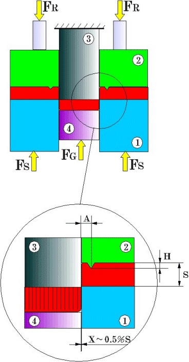

|
2.1. Hassas Kesme Prensibi:
Bileþik kesme kalýplarýna benzemekle beraber normal kesme kalýplarýndan farklý yapýda olan hassas kesme kalýplarýný oluþturan ana parçalar Þekil 5'te görülmektedir. Üç etkili baský sistemi bulunan özel preslerde kullanýlan hassas kesme kalýbýnda baþlýca farklýlýk ilave baský elemanlarýdýr. Üzerinde (V) þeklinde çökertme çenesi bulunan (2) numaralý baský plakasý ve kesme zýmbasý altýndaki (4) numaralý karþý baský zýmbasý kalýbýn ilave elemanlarýdýr (4).
Geleneksel kesme tekniði |
Hassas kesme tekniði |
|
 |
|
|
Geleneksel kesme ile oluþan çapaklý yan yüzey |
Hassas kesme ile elde edilen az pürüzlü yan yüzey |
|
Baský plakasýnda bulunan (V) þeklindeki çevresel çene kesilme öncesi malzemeye batarak yatay doðrultuda ilave baský gerilmesi oluþturur. Kesme baskýsýna ilave olan bu gerilme malzemenin yýrtýlma olmaksýzýn akma sýnýrýna eriþmesini saðlar. Malzeme kalýp içerisinde
preslenir. Þekilden görüldüðü gibi kesilecek parça kesilme esnasýnda (3) ve (4) nolu kesme zýmbasý ve çýkarýcý zýmbalar arasýnda sýkýþtýrýlarak kesme esnasýnda bombeleþmesi önlendiðinden bu yöntemle normal kesme ile kýyaslanamayacak düzlükte parçalar elde edilebilir (4).
Þekil 5. Hassas kesme kalýbý ana elemanlarý (4)
Hassas kesmenin oluþum kademeleri Þekil 6'te görülmektedir. Hassas kesme operasyonu aþaðýda sýralandýðý þekilde gerçekleþir:
1) Kalýp açýktýr. Malzeme kesme için sürülür.
2) Kalýp kapanýr. Malzeme dýþ taraftan çökertme zýmbasýnýn, iç taraftan da çýkarýcý zýmbanýn baskýsý altýndadýr. Kesilme çevresine (V) þeklinde çökertme yapýlýr.
3) Malzeme kesme kuvveti, çökertme kuvveti ve karþýlýk kuvvetinin birlikte etkisiyle kesilir.
4) Pres koçu kursunu tamamlamýþtýr. Kesilen parça kesme kalýbý, kesilen delik pulu da kesme zýmbasý içine girmiþtir.
5) Çökertme kuvveti ve karþý baský kuvveti devreden çýkar. Kalýp açýlmýþtýr.
6) Çökertme zýmbasý üzerine sýyýrma kuvveti etki yaparak þeridi zýmbadan sýyýrýr. Ayný zamanda devrede olan sýyýrýcý kuvveti itici zýmbaya etki yaparak kesilen pulu zýmbadan dýþarý iteler.
7) Alt kalýptaki itici kuvveti kesilen parçayý kalýptan dýþarý çýkarýr. Yeni bir kesim için þeridi ileri sürme hareketi baþlar.
8) Kesilen parça ve kesilen delik pulu hava üflenerek veya otomatik tahliye düzeneði tarafýndan kalýp sahasýndan uzaklaþtýrýlýr. Þerit ilerlemesi sona ermiþtir. Yeni çevrim baþlayabilir (4).
Þekil 6. Hassas kesmenin oluþum kademeleri (5)
Hassas kesme kalýplarýnýn normal kesme kalýplarýndan önemli bir farklýlýðý da çok dar kesme boþluðu kullanýlmýþ olmasýdýr. Dar tutulmuþ kesme boþluðu malzemenin temiz kesilme yüzeyi ile kesilmesini saðlar. Kalýpla zýmba arasýnda býrakýlan bu boþluðun deðeri malzeme kalýnlýðýna, kesilen þekil ve boyuta, malzeme kalitesi ile mukavemetine baðlýdýr. Fena þekillenebilir malzemelerdeki kesme boþluðu iyi þekillenebilir malzemelerden daha küçüktür. Kesme boþluðu genellikle %1malzeme kalýnlýðý deðerinde alýnabilir (4).
|